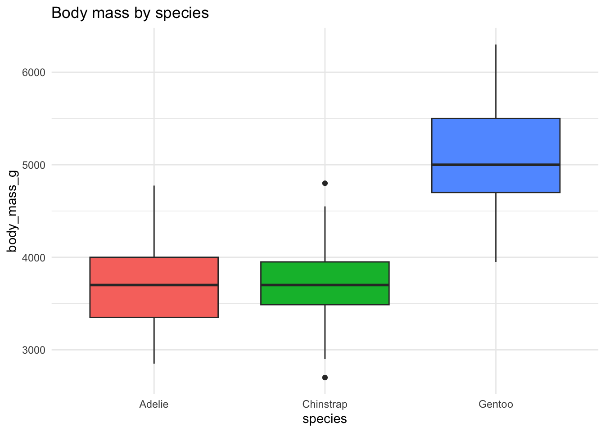

Show the code
penguins |>
group_by(species) |>
summarise(mean_bill = mean(bill_length_mm, na.rm = TRUE))# A tibble: 3 × 2
species mean_bill
<fct> <dbl>
1 Adelie 38.8
2 Chinstrap 48.8
3 Gentoo 47.5A comprehensive guide to Quarto code chunk options
Collapsible code blocks let readers focus on output first, then explore code if curious.
penguins |>
group_by(species) |>
summarise(mean_bill = mean(bill_length_mm, na.rm = TRUE))# A tibble: 3 × 2
species mean_bill
<fct> <dbl>
1 Adelie 38.8
2 Chinstrap 48.8
3 Gentoo 47.5penguins |>
count(species, island)# A tibble: 5 × 3
species island n
<fct> <fct> <int>
1 Adelie Biscoe 44
2 Adelie Dream 56
3 Adelie Torgersen 52
4 Chinstrap Dream 68
5 Gentoo Biscoe 124Useful for referencing specific lines in explanations.
Long lines get a horizontal scrollbar:
penguins |> mutate(description = paste("This penguin is a", species, "from", island, "with bill length", bill_length_mm, "mm and bill depth", bill_depth_mm, "mm"))Long lines wrap to fit:
penguins |> mutate(description = paste("This penguin is a", species, "from", island, "with bill length", bill_length_mm, "mm and bill depth", bill_depth_mm, "mm"))result <- penguins |>
group_by(species) |>
summarise(n = n())
# This runs but output is hidden
The chunk above created secret_data with 152 rows, but you didn’t see it happen.
# This code is displayed but never runs
penguins |>
filter(species == "Chinstrap") |>
arrange(desc(body_mass_g))Three annotation styles are available. Set globally in YAML or per-chunk.
The most useful widespread is default (below):
penguins |>
filter(species == "Gentoo") |>
group_by(island) |>
summarise(
mean_mass = mean(body_mass_g, na.rm = TRUE)
)analysis.R
# Load and prepare data
library(tidyverse)
library(palmerpenguins)
penguins_clean <- penguins |>
drop_na()ggplot(penguins, aes(x = species, y = body_mass_g, fill = species)) +
geom_boxplot() +
theme_minimal() +
labs(title = "Body mass by species")
ggplot(penguins, aes(x = species, y = body_mass_g, fill = species)) +
geom_boxplot() +
theme_minimal() +
labs(title = "Body mass by species") +
theme(legend.position = "none")
Build up code step-by-step using separate chunks:
glimpse(penguins)Rows: 344
Columns: 8
$ species <fct> Adelie, Adelie, Adelie, Adelie, Adelie, Adelie, Adel…
$ island <fct> Torgersen, Torgersen, Torgersen, Torgersen, Torgerse…
$ bill_length_mm <dbl> 39.1, 39.5, 40.3, NA, 36.7, 39.3, 38.9, 39.2, 34.1, …
$ bill_depth_mm <dbl> 18.7, 17.4, 18.0, NA, 19.3, 20.6, 17.8, 19.6, 18.1, …
$ flipper_length_mm <int> 181, 186, 195, NA, 193, 190, 181, 195, 193, 190, 186…
$ body_mass_g <int> 3750, 3800, 3250, NA, 3450, 3650, 3625, 4675, 3475, …
$ sex <fct> male, female, female, NA, female, male, female, male…
$ year <int> 2007, 2007, 2007, 2007, 2007, 2007, 2007, 2007, 2007…penguins_filtered <- penguins |>
filter(!is.na(body_mass_g))
nrow(penguins_filtered)[1] 342penguins_filtered |>
group_by(species) |>
summarise(
n = n(),
mean_mass = mean(body_mass_g),
sd_mass = sd(body_mass_g)
)# A tibble: 3 × 4
species n mean_mass sd_mass
<fct> <int> <dbl> <dbl>
1 Adelie 151 3701. 459.
2 Chinstrap 68 3733. 384.
3 Gentoo 123 5076. 504.penguins_filtered |>
ggplot(aes(x = species, y = body_mass_g, fill = species)) +
geom_violin() +
geom_boxplot(width = 0.2, fill = "white") +
theme_minimal() +
labs(
title = "Body mass distribution by species",
y = "Body mass (g)",
x = NULL
) +
theme(legend.position = "none")
| Option | Values | Effect |
|---|---|---|
echo |
true/false |
Show/hide code |
eval |
true/false |
Run/skip code |
output |
true/false/asis |
Show/hide output |
include |
true/false |
Include anything at all |
code-fold |
true/false/show |
Collapsible code |
code-summary |
"text" |
Fold button label |
code-line-numbers |
true/false |
Line numbers |
code-overflow |
scroll/wrap |
Long line handling |
code-annotations |
hover/below/select |
Annotation style |
filename |
"name.R" |
Show filename header |
warning |
true/false |
Show warnings |
message |
true/false |
Show messages |